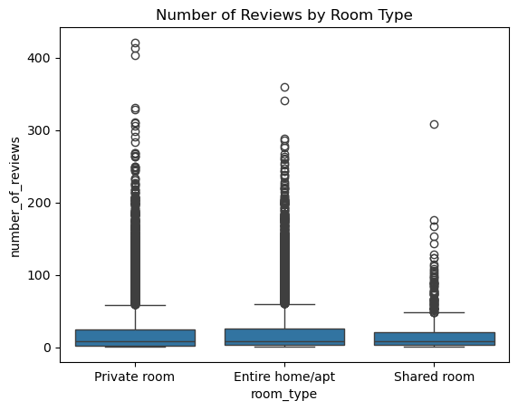

patents int64
region object
age float64
iscustomer int64
dtype: object
df_bp.describe()
patents
age
iscustomer
count
1500.000000
1500.000000
1500.000000
mean
3.684667
26.357667
0.320667
std
2.352500
7.242528
0.466889
min
0.000000
9.000000
0.000000
25%
2.000000
21.000000
0.000000
50%
3.000000
26.000000
0.000000
75%
5.000000
31.625000
1.000000
max
16.000000
49.000000
1.000000
Compare histograms and means of number of patents by customer status
#Compare histograms and means of number of patents by customer statusimport matplotlib.pyplot as plt# Clean column names if neededdf_bp.columns = df_bp.columns.str.strip().str.lower().str.replace('#', '').str.replace(' ', '_')# Separate datacustomers = df_bp[df_bp['iscustomer'] ==1]non_customers = df_bp[df_bp['iscustomer'] ==0]# Plot histogramsplt.figure(figsize=(10, 5))plt.hist(non_customers['patents'], bins=20, alpha=0.6, label='Non-Customers')plt.hist(customers['patents'], bins=20, alpha=0.6, label='Customers')plt.xlabel("Number of Patents")plt.ylabel("Frequency")plt.title("Histogram of Patents by Customer Status")plt.legend()plt.show()# Compare meansmean_customers = customers['patents'].mean()mean_non_customers = non_customers['patents'].mean()print(f"Mean number of patents (Customers): {mean_customers:.2f}")print(f"Mean number of patents (Non-Customers): {mean_non_customers:.2f}")
Mean number of patents (Customers): 4.13
Mean number of patents (Non-Customers): 3.47
# Group data by region and customer statusdf_bp['customer_status'] = df_bp['iscustomer'].map({0: 'Non-Customer', 1: 'Customer'})region_comparison = df_bp.groupby(['region', 'customer_status']).size().unstack()# Plot grouped bar chartregion_comparison.plot(kind='bar', figsize=(10, 6), color=['#DD8452', '#4C72B0'])plt.title("Region Comparison by Customer Status")plt.xlabel("Region")plt.ylabel("Number of Firms")plt.legend(title="Customer Status")plt.tight_layout()plt.show()
# Plot boxplot to compare age by customer statusimport seaborn as snsplt.figure(figsize=(10, 5))sns.boxplot(data=df_bp, x="customer_status", y="age", palette =['#4C72B0', '#DD8452'])plt.title("Age Distribution by Customer Status")plt.xlabel("Customer Status")plt.ylabel("Age")plt.tight_layout()plt.show()
/tmp/ipykernel_69858/4202040372.py:5: FutureWarning:
Passing `palette` without assigning `hue` is deprecated and will be removed in v0.14.0. Assign the `x` variable to `hue` and set `legend=False` for the same effect.
sns.boxplot(data=df_bp, x="customer_status", y="age", palette =['#4C72B0', '#DD8452'])
import numpy as npfrom scipy.special import gammaln # Likelihood functiondef poisson_likelihood(lam, Y):if lam <=0:return0.0# Likelihood is zero for non-positive lambdareturn np.prod((np.exp(-lam) * lam**Y) / np.exp(gammaln(Y +1)))# Log-likelihood function (numerically stable)def poisson_log_likelihood(lam, Y):if lam <=0:return-np.inf # Log-likelihood is undefined for non-positive lambdareturn np.sum(Y * np.log(lam) - lam - gammaln(Y +1))
# Define the observed number of patents as input for YY = df_bp['patents'].values# Define a range of lambda valueslambda_values = np.linspace(0.1, 10, 300)# Calculate likelihood and log-likelihood for each lambdalikelihoods = [poisson_likelihood(lam, Y) for lam in lambda_values]log_likelihoods = [poisson_log_likelihood(lam, Y) for lam in lambda_values]# Plot the likelihoodplt.figure(figsize=(12, 6))plt.plot(lambda_values, likelihoods, label="Likelihood", color="blue")plt.xlabel("Lambda")plt.ylabel("Likelihood")plt.title("Likelihood vs Lambda")plt.grid()plt.legend()plt.show()# Plot the log-likelihood# Plot the log-likelihoodplt.figure(figsize=(12, 6))plt.plot(lambda_values, log_likelihoods, label="Log-Likelihood", color="red")# Find the lambda that maximizes the log-likelihood (MLE)mle_lambda = lambda_values[np.argmax(log_likelihoods)]plt.axvline(mle_lambda, color="green", linestyle="--", label=f"MLE (Lambda = {mle_lambda:.2f})")plt.xlabel("Lambda")plt.ylabel("Log-Likelihood")plt.title("Log-Likelihood vs Lambda")plt.grid()plt.legend()plt.show()# Display the MLEprint(f"Maximum Likelihood Estimate (MLE) for Lambda: {mle_lambda:.2f}")
Maximum Likelihood Estimate (MLE) for Lambda: 3.68
#Find the MLE by optimizing likelihood function with sp.optimize()from scipy.optimize import minimize# Define the negative log-likelihood functiondef negative_log_likelihood(lam, Y):if lam[0] <=0:return np.inf # Return infinity for non-positive lambdareturn-poisson_log_likelihood(lam[0], Y)# Initial guess for lambdainitial_guess = [1.0]# Perform optimizationresult = minimize(negative_log_likelihood, initial_guess, args=(Y,), bounds=[(0.001, None)])# Extract the MLE for lambdamle_lambda_optimized = result.x[0]print(f"Optimized Maximum Likelihood Estimate (MLE) for Lambda: {mle_lambda_optimized:.2f}")
Optimized Maximum Likelihood Estimate (MLE) for Lambda: 3.68
# Log-likelihood function with covariatesdef poisson_log_likelihood_with_covariates(beta, X, Y):""" Log-likelihood function for Poisson regression with covariates. Parameters: - beta: Coefficient vector (numpy array). - X: Covariate matrix (numpy array). - Y: Observed counts (numpy array). Returns: - Log-likelihood value (float). """# Compute lambda using the inverse link function (exp) lambda_ = np.exp(X @ beta)# Compute the log-likelihoodreturn np.sum(Y * np.log(lambda_) - lambda_ - gammaln(Y +1))
import numpy as npimport pandas as pdfrom scipy import optimizefrom scipy.special import gammalndf_bp2 = df_bp.copy()# Create polynomial term for agedf_bp2["agesquared"] = df_bp2["age"] **2# Create dummy variables for region (drop one category to avoid multicollinearity)region_dummies = pd.get_dummies(df_bp2["region"], drop_first=True)# Construct the design matrix X with intercept, age, agesquared, region dummies, and customer flagX = pd.concat([ pd.Series(1, index=df_bp2.index, name="intercept"), # intercept term df_bp2["age"], df_bp2["agesquared"], region_dummies, df_bp2["iscustomer"]], axis=1)# Response variableY = df_bp2["patents"].valuesX_matrix = X.values# Define Poisson log-likelihood functiondef poisson_loglike(beta, X, Y): beta = np.atleast_1d(np.asarray(beta)) Xb = np.dot(X, beta).astype(np.float64) Xb_clipped = np.clip(Xb, a_min=None, a_max=20) # cap to avoid overflow in exp lam = np.exp(Xb_clipped)return np.sum(-lam + Y * Xb - gammaln(Y +1))# Negative log-likelihood for minimizationdef neg_loglike(beta, X, Y):return-poisson_loglike(beta, X, Y)# Initial guess for beta (zeros)initial_beta = np.zeros(X.shape[1])# Optimize using BFGSresult = optimize.minimize(neg_loglike, initial_beta, args=(X_matrix, Y), method='BFGS')# Extract MLE estimates and standard errorsbeta_hat = result.xhessian_inv = result.hess_invstd_errs = np.sqrt(np.diag(hessian_inv))# Create summary tablesummary = pd.DataFrame({"Coefficient": beta_hat,"Std. Error": std_errs}, index=X.columns)# Display resultsummary = summary.round(4)summary
Coefficient
Std. Error
intercept
-0.5100
0.1930
age
0.1487
0.0145
agesquared
-0.0030
0.0003
Northeast
0.0292
0.0468
Northwest
-0.0176
0.0572
South
0.0566
0.0562
Southwest
0.0506
0.0496
iscustomer
0.2076
0.0329
import statsmodels.api as sm# Drop the manually added intercept column (to avoid duplication)X_sm = X.drop(columns="intercept", errors="ignore")# Add constant using statsmodelsX_sm = sm.add_constant(X_sm)# Ensure all data is numericX_sm = X_sm.astype(float)# Fit Poisson regression modelpoisson_model = sm.GLM(Y, X_sm, family=sm.families.Poisson())poisson_results = poisson_model.fit()# Show the resultsprint(poisson_results.summary())
# Copy the original design matrix used in GLMX_0 = X_sm.copy()X_1 = X_sm.copy()# Set all iscustomer values to 0 and 1 respectivelyX_0["iscustomer"] =0X_1["iscustomer"] =1# Predict expected patents using the fitted modely_pred_0 = poisson_results.predict(X_0)y_pred_1 = poisson_results.predict(X_1)# Compute the average difference in expected patent countsaverage_effect = (y_pred_1 - y_pred_0).mean()print(f"Estimated average effect of Blueprinty's software: {average_effect:.4f} patents per firm")
Estimated average effect of Blueprinty's software: 0.7928 patents per firm
Airbnb
import pandas as pddf_ab = pd.read_csv('airbnb.csv')
import numpy as npimport seaborn as snsimport matplotlib.pyplot as plt# Histograms for numerical featuresnumeric_cols = ['number_of_reviews', 'price', 'bathrooms', 'bedrooms','review_scores_cleanliness', 'review_scores_location', 'review_scores_value']df[numeric_cols].hist(bins=30, figsize=(14, 10))plt.tight_layout()plt.show()# Boxplot of number_of_reviews by room_typesns.boxplot(x='room_type', y='number_of_reviews', data=df)plt.title('Number of Reviews by Room Type')plt.show()# Boxplot of number_of_reviews by instant_bookablesns.boxplot(x='instant_bookable', y='number_of_reviews', data=df)plt.title('Number of Reviews by Instant Bookable Status')plt.show()#Boxplot of number_of_reviews by bedroomssns.boxplot(x='bedrooms', y='number_of_reviews', data=df)plt.title('Number of Reviews by Bedrooms')plt.show()# Correlation heatmapplt.figure(figsize=(8, 6))sns.heatmap(df[numeric_cols].corr(), annot=True, cmap='coolwarm', fmt=".2f")plt.title("Correlation Heatmap")plt.show()

import matplotlib.pyplot as pltimport seaborn as snsimport numpy as np# Plot distribution of number_of_reviewsplt.figure(figsize=(8, 5))sns.histplot(df['number_of_reviews'], bins=50, kde=False)plt.title("Distribution of Number of Reviews")plt.xlabel("Number of Reviews")plt.ylabel("Count")plt.show()# Average number of reviews by room_typeplt.figure(figsize=(8, 5))sns.barplot(x='room_type', y='number_of_reviews', data=df, estimator=np.mean)plt.title("Average Number of Reviews by Room Type")plt.ylabel("Average Number of Reviews")plt.show()# Average number of reviews by instant_bookableplt.figure(figsize=(8, 5))sns.barplot(x='instant_bookable', y='number_of_reviews', data=df, estimator=np.mean)plt.title("Average Number of Reviews by Instant Bookable Status")plt.ylabel("Average Number of Reviews")plt.show()# Average number of reviews by number of bedroomsplt.figure(figsize=(8, 5))sns.barplot(x='bedrooms', y='number_of_reviews', data=df, estimator=np.mean)plt.title("Average Number of Reviews by Number of Bedrooms")plt.ylabel("Average Number of Reviews")plt.show()# Average number of reviews by room_type and instant_bookable (interaction)plt.figure(figsize=(10, 6))sns.barplot(x='room_type', y='number_of_reviews', hue='instant_bookable', data=df, estimator=np.mean)plt.title("Average Number of Reviews by Room Type and Instant Bookability")plt.ylabel("Average Number of Reviews")plt.legend(title='Instant Bookable')plt.show()
import pandas as pdimport statsmodels.api as sm# Create dummy variables for room typeroom_dummies = pd.get_dummies(df["room_type"], drop_first=True)# Convert 'instant_bookable' to binarydf["instant_bookable"] = df["instant_bookable"].map({"t": 1, "f": 0})# Construct the design matrixX = pd.concat([ df[["price", "days", "bathrooms", "bedrooms","review_scores_cleanliness", "review_scores_location", "review_scores_value","instant_bookable"]], room_dummies], axis=1)# Add intercept and ensure all values are floatX = sm.add_constant(X)X = X.astype(float)# Define the target variableY = df["number_of_reviews"]# Fit Poisson regression modelpoisson_model = sm.GLM(Y, X, family=sm.families.Poisson())poisson_results = poisson_model.fit()# Format outputsummary_df = poisson_results.summary2().tables[1]summary_df = summary_df.rename(columns={"Coef.": "Coefficient","Std.Err.": "Std. Error","P>|z|": "P-Value"})# Filter and round significant resultssignificant_results = summary_df[summary_df["P-Value"] <0.05][["Coefficient", "Std. Error", "P-Value"]]significant_results = significant_results.round(4)print(significant_results)